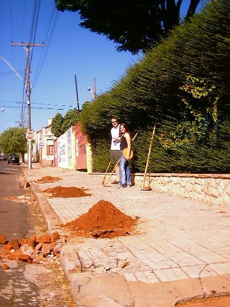
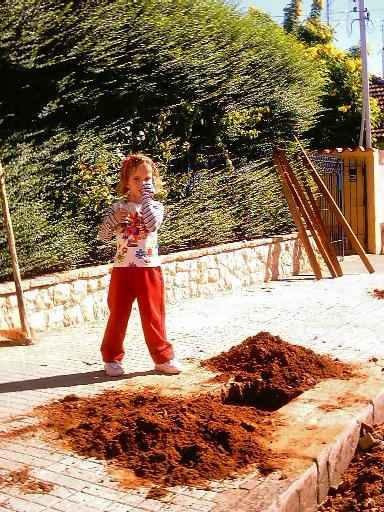
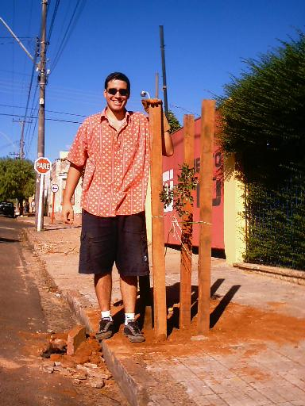
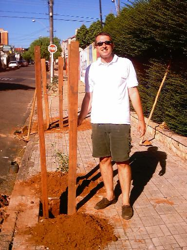
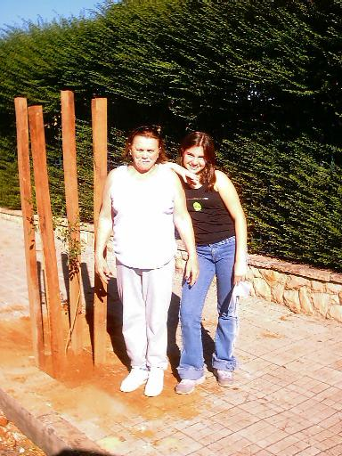
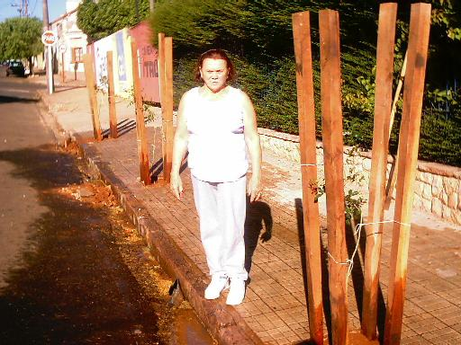
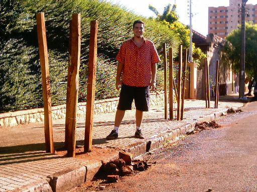

Neste dia,
fizemos o plantio de 3 mudas de Murta.
O plantio foi
feito na calçada da residência da nossa décima primeira colaboradora,
Andreza Rossette, que reside no
centro de São Carlos.
Veja as fotos:
 |
A foto
mostra os três buracos já abertos na calçada,
onde foram plantadas as três mudas de
Murta.
Ao fundo está Adriano M. e sua
filha Ana Luiza R. M.. |
 |
Nossa
pequena ajudante, Maria Laura Maschetto
posa ao lado de um dos buracos.
|
 |
Após
plantada a primeira muda, Danilo descansa. |
 |
Na
descontração, Adriano planta a segunda muda de Murta. |
 |
Nossa
colaboradora, Andreza Rossette, e sua neta,
Ana Luiza Rossette Maschetto
posam ao lado
da terceira muda de Murta.
|
 |
Terminado
o plantio e molhadas as árvores, Andreza posa para mais uma foto. |
 |
Danilo,
como não poderia deixar de ser, aparece em mais uma foto...hehehe |
Este foi mais
um plantio muito importante para nós, pois continuamos o projeto
na área central da cidade, onde
não há o costume de plantar árvores.
Esperamos que o exemplo de
nossa colaboradora, Andreza Rossette,
sirva para muitos outros
moradores !
Agradecemos aos nossos
colaboradores Adriano Maschetto e Mônica N. R. Maschetto
por conseguir mais uma
colaboradora para o nosso projeto !
Vamos manter o o projeto de
plantio, com seca ou chuva, honrando seu nome:
Projeto Plante a Vida !
|